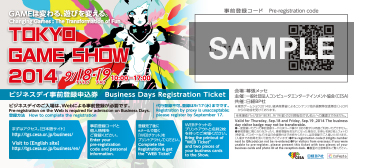

![Business Day 2014.9.18[Thu]-19[Fri] Public Day 2014.9.20[Sat]-21[Sun] @ Makuhari Messe](../../common/images/pc_date.png)


※The picture shown here are from TGS2012&TGS2013. Please look at them for your reference.
People who are allowed to enter the site on business days are those related to game business (employee of a game-related company, people working in the game-related industry, people considering to do business with game-related companies and people related to distribution). Please obtain the "Business Days Registration Ticket" that the exhibitors delivered to affiliated people and register from the official website. Or, you can just simply pre-register from the website (for 5,000 JPY ＜including tax＞).

On the website , please enter the personal information that will prove that you are engaged in the game-related work. The Management Office will review the provided information and only the people who were approved by the Management Office are allowed to enter. People under age 18, students and people not engaged in game-related work are not allowed to enter.
, please enter the personal information that will prove that you are engaged in the game-related work. The Management Office will review the provided information and only the people who were approved by the Management Office are allowed to enter. People under age 18, students and people not engaged in game-related work are not allowed to enter.
If you wish to have a receipt issued for the 5,000 JPY pre-registration, URL of the page where you can get the receipt is written in the email informing that pre-registration has been completed, so print the receipt from that page.

On the day you come to the site, the staff at the reception will check to see if you are the same person as the one who pre-registered. Please show the print-out of "Web Ticket" which is attached to the confirmation e-mail of pre-registration completion, with your photo ID and business card.
If you enter with TGS Forum Expert Session Ticket, you need the on-site registration. If you come on 18th, please come to Information counter at central entrance of Hall 5. If you come on 19th, please drop by TGS Forum reception desk on 2nd floor of International Conference Hall. "Business Days Registration Ticket" will be delivered to you.
We recommend any press people planning to cover on the business days to pre-register from the website , as the reception counter is expected to get very busy on those days. However, it is also possible to do press activities upon application at the venue.
Please fill in the necessary information in the "Press Activity Application Form" and hand in 2 business cards, photo ID such as a company employee certificate or a driver's license, a copy of or the actual latest signed article, editing staff column with your name, URL of the medium, at the Press Reception Counter.
, as the reception counter is expected to get very busy on those days. However, it is also possible to do press activities upon application at the venue.
Please fill in the necessary information in the "Press Activity Application Form" and hand in 2 business cards, photo ID such as a company employee certificate or a driver's license, a copy of or the actual latest signed article, editing staff column with your name, URL of the medium, at the Press Reception Counter.
Hotels around Makuhari Messe, which is the site for TGS2014, will be difficult to reserve at the last minute or the days during TGS2014.
Stations with easy access to Makuhari Messe are JR Keiyo Line, Kaihin Makuhari station, which is the closest station, and JR Sobu Line, Kaihin Hongo station where bus services are available to the site. It is also possible to use hotels along those railroad lines.
There is no official tour on business days.
The latest information on the contents and the events in each booth can be obtained from the official website or the website of the relevant exhibitor. In the official website, floor map and the contents of each exhibitor will be announced just before the Show.
Also, on the the official website, news of the media partners and the exhibitors will be updated as needed. It will allow you to check any information beforehand.
The official account of TGS2014 for social networking service is shown below:
・Twitter：「Tokyo_Game_Show  」
」
・Facebook：「Tokyo_Game_Show 」
You can also get updates from these services. Please be our follower.
On the first day of the Business Day, September 18th(Thursday), TGS Forum Keynote will be given from 10:30 a.m. at the event stage in Hall 8. It is FREE of charge. You can apply on the day by presenting your business card, however, priority is given to people who have applied in advance. Therefore, if you really want to attend, we advise you to apply in advance.
If you complete advance registration, please take the print-out of "Web Ticket" which is attached to the confirmation e-mail of pre-registration completion.

For your information, it is not necessary to go through the entry reception counter of TGS to attend the "Keynote". If you don't have the time to go through the entry reception counter, please come directly to the Keynote reception at "Event Stage in Hall 8".
On the first day of the Business Day, September 18th(Thursday), "TGS Forum Asia Game Business Summit" will be held from 1:30 p.m. at the event stage in Hall 8.
Representatives of the game companies in various Asian countries like Indonesia, Korea, Singapore and China will get together and discuss the challenges and future vision of the game industry.
It is FREE of charge. You can apply on the day by presenting your business card, however, priority is given to people who have applied in advance. Therefore, if you really want to attend, we advise you to apply in advance.

If you complete advance registration, please take the print-out of "Web Ticket" which is attached to the confirmation e-mail of pre-registration completion.
For your information, it is not necessary to go through the entry reception counter of TGS to listen to the "Asia Game Business Summit". If you don't have the time to go through the entry reception counter, please come directly to the reception of Asia Game Business Summit at "Event Stage in Hall 8".
On the second day of the Business Day, September 19th(Friday), "TGS Forum Special Session" will be held in the afternoon to provide you the latest information on the game industry.
Fee of 8,000 JPY for advance tickets and 10,000 JPY for on the day tickets (including Business Day Registration Form) will be necessary. You can apply on the day by presenting your business card, however, priority is given to people who have applied in advance. Therefore, if you really want to attend, we advise you to apply in advance.

If you complete advance registration, please take the print-out of "Web Ticket" which is attached to the confirmation e-mail of pre-registration completion.
For your information, it is not necessary to go through the entry reception counter of TGS to listen to the "Special Session". If you don't have the time to go through the entry reception counter, please come directly to the Special Session reception counter on the 2nd floor of the International Conference Hall.
Please utilize business matching system, "Asia Business Gateway" , if you want to have a meeting with Business Day exhibitors.
, if you want to have a meeting with Business Day exhibitors.
This is an appointment system that provides visitors the chance to have business meetings with the exhibitors during TGS2014.
Visitors can search by any information such as technologies, products and services, and get in touch with the person in charge at the exhibitor's company and request for a meeting during Business Days.
Of course, it is possible to have a business meeting without an appointment, but if you pre-register to Asia Business Gateway, you can have meetings more efficiently. We advise you to make the best use of this system.

2002-2014 CESA / Nikkei Business Publications, Inc. All rights reserved.